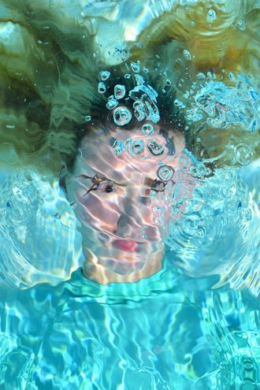
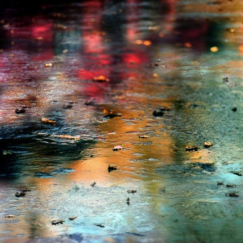
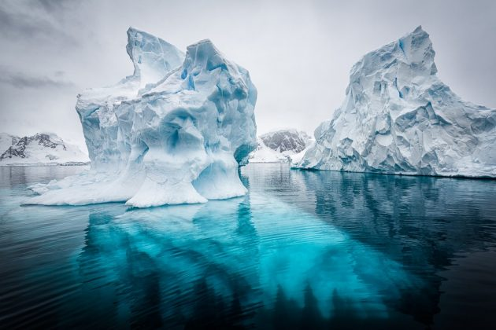
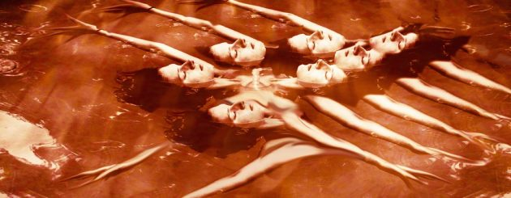

The Center for Fine Art Photography
Water 2016 features many varied and
diverse approaches to the visualization
of water in contemporary photography.
It focuses on the many different ways in
which water can be represented
through art.

10/07
10/29
2016
"I tried to choose work that best exemplified
the complexity of water's relationship with life
on earth, the human condition, and most of all
with the art of photography."
-Juror Richard McCabe
